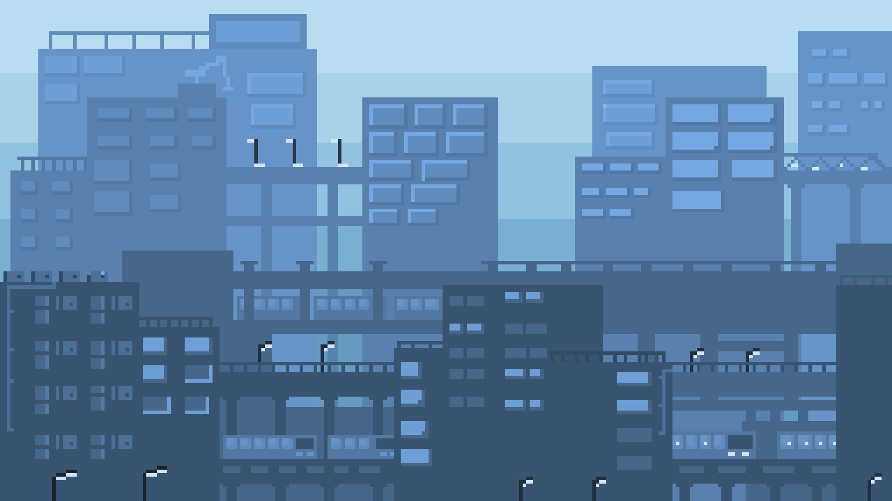
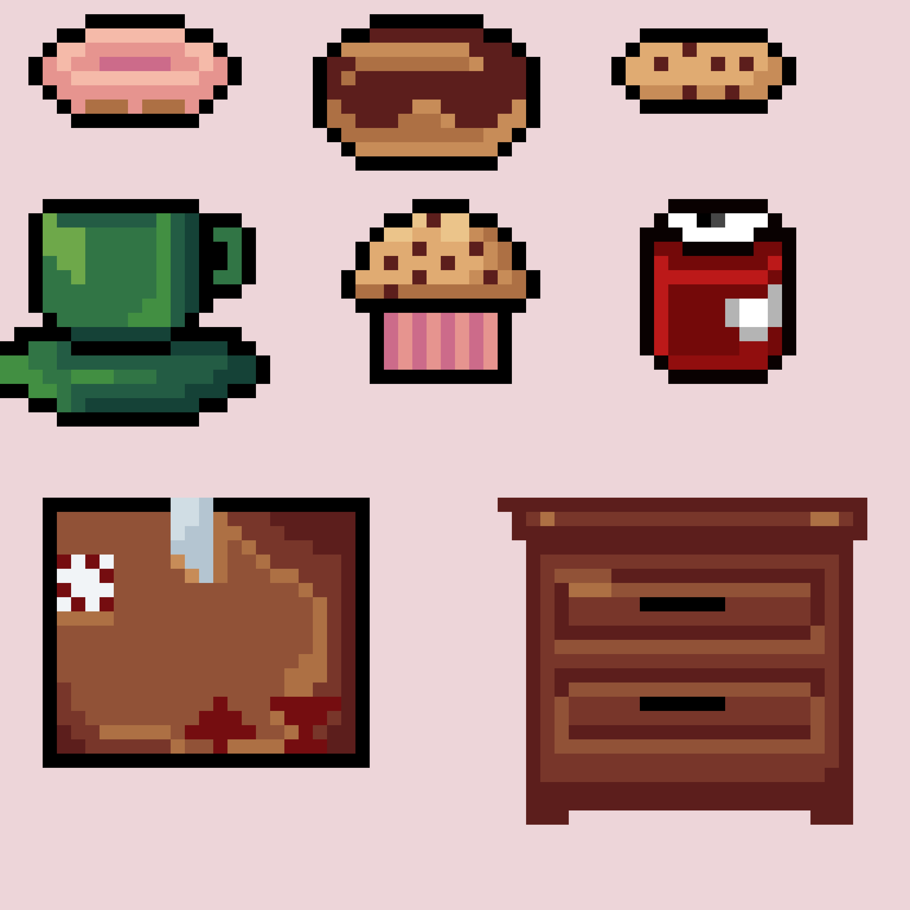

GET TO KNOW ME
INFORMATION ABOUT ME
Get to know more about my background, educational journey, and personal interests.
GET TO KNOW ME
Get to know more about my background, educational journey, and personal interests.
Name: Shadin M. Calatan
Age: 21
Date of Birth: May 23, 2005
Email: calatanshadin85@gmail.com
Province: Benguet
Elementary: Daily International School
High School: Daily International School
Senior High School: University of the Cordilleras, HUMSS Strand
College: University of the Cordilleras, Bachelor of Information Technology, Major in Network and Security
My personal interests vary depending on what I find interesting. I enjoy drawing, particularly traditional art, although I have recently started exploring digital art, especially pixel art.
I also enjoy reading classical literature, listening to different genres of music, and watching documentaries during my free time.
I consider myself a curious and open-minded individual who is always willing to explore new experiences and learn new things. My strengths include creativity and adaptability, while one of my areas for improvement is managing procrastination.
What motivates me most is the belief that no matter how difficult today may be, there is always tomorrow and another opportunity to improve.

